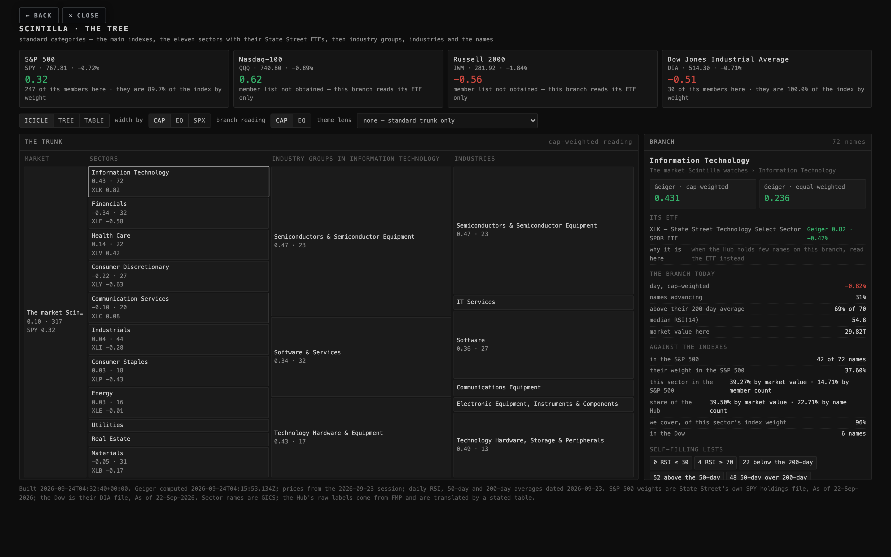
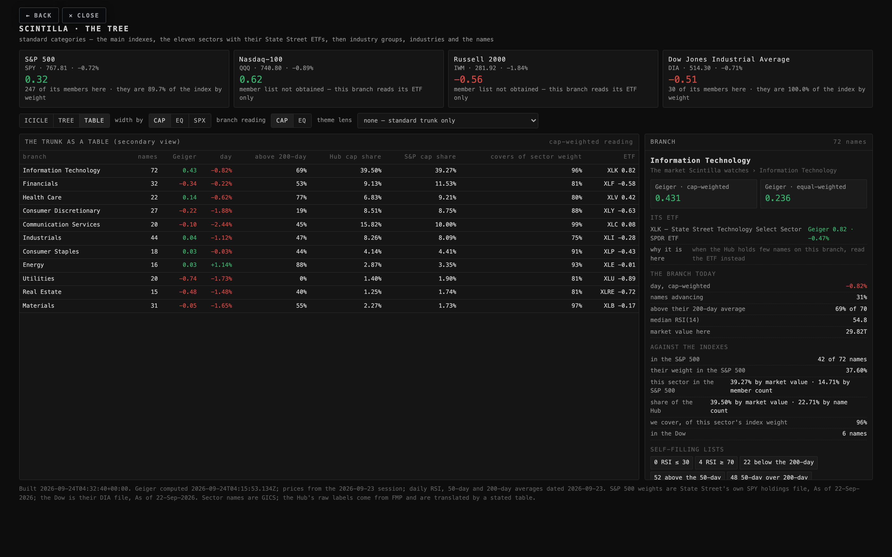
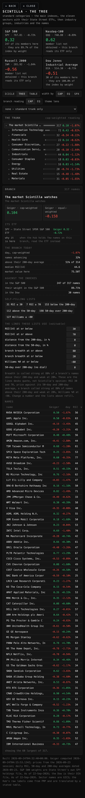

What the page shows, where every number comes from, what could still be wrong, and what I did not do. Built 2026-09-24T04:32:40+00:00. Nothing was deployed, pushed or written to any table.
The old tree used branch names nobody standard would recognise — "consumer rounds and retail" and the like — and it was drawn as a table. This one uses the categories every desk uses, and it is drawn as a tree.
At 1680 across. Left to right: the market, the eleven sectors, the industry groups inside whichever sector you pick, then the industries. Each block's height is its share of the market value on that level, so the picture is the weighting.

Tapping a branch opens it on the right: its two Geiger readings, its ETF, its day, how much of the S&P 500 it is, and its self-filling lists.

At 390 across, on a phone, the tree view opens instead of the icicle, because bands that thin cannot be read. Everything else is the same page.

You were told "40% of the Hub is technology against 15% of the S&P". That compared the Hub by market value with the S&P by number of members — two different measures. Measured like with like tonight, the Hub's technology weight is 39.50% of its market value and the S&P 500's is 39.27%. They are the same to within half a point. By member count the Hub is 22.71% and the index 14.71% — the Hub holds proportionally more technology names, but it is not more technology money.
The real overweight is somewhere else: Communication Services, 15.82% of the Hub by value against 10.00% of the index.
| sector | ETF | Hub by value | S&P by value | Hub by count | S&P by count | Hub names in the index | we cover of the sector's index weight |
|---|---|---|---|---|---|---|---|
| Information Technology | XLK | 39.50% | 39.27% | 22.71% | 14.71% | 42 of 74 | 96% |
| Financials | XLF | 9.13% | 11.53% | 10.09% | 15.11% | 29 of 76 | 81% |
| Health Care | XLV | 6.83% | 9.21% | 6.94% | 11.93% | 21 of 60 | 80% |
| Consumer Discretionary | XLY | 8.51% | 8.75% | 8.52% | 9.34% | 18 of 47 | 88% |
| Communication Services | XLC | 15.82% | 10.00% | 6.31% | 4.57% | 16 of 23 | 99% |
| Industrials | XLI | 8.26% | 8.09% | 13.88% | 16.50% | 37 of 83 | 75% |
| Consumer Staples | XLP | 4.14% | 4.41% | 5.68% | 6.56% | 17 of 33 | 90% |
| Energy | XLE | 2.87% | 3.35% | 5.05% | 4.17% | 15 of 21 | 93% |
| Utilities | XLU | 1.40% | 1.90% | 6.31% | 6.16% | 19 of 31 | 81% |
| Real Estate | XLRE | 1.25% | 1.74% | 4.73% | 5.96% | 15 of 30 | 81% |
| Materials | XLB | 2.27% | 1.73% | 9.78% | 4.97% | 18 of 25 | 97% |
Hub market values are FMP's, the same source the Hub already uses. The S&P columns are State Street's own SPY holdings file (As of 22-Sep-2026, 505 holdings), with each member's GICS sector from Wikipedia's component table (503 members).
It was slim because the old page counted names, not weight. By weight the Hub is nearly the whole index: it holds 247 of the 505 S&P 500 members, and those names are 89.7% of the index by weight. Every branch on the tree now says the same thing about itself — for example technology's 42 index names are 96% of that sector's weight in the S&P 500.
| index | ETF that stands for it | its Geiger | what we hold of it |
|---|---|---|---|
| S&P 500 | SPY | 0.32 | 247 of its members are here, and they are 89.7% of the index by weight |
| Nasdaq-100 | QQQ | 0.62 | member list not obtained tonight — this branch reads its ETF only |
| Russell 2000 | IWM | -0.56 | member list not obtained tonight — this branch reads its ETF only |
| Dow Jones Industrial Average | DIA | -0.51 | 30 of its members are here, and they are 100.0% of the index by weight |
Two of the four could not be resolved by member: Invesco and iShares serve a web page rather than a file to a script, and Wikipedia's Nasdaq-100 table did not parse. So the Nasdaq-100 and the Russell 2000 branches read their ETF only, and say so on the card. The S&P 500 and the Dow are measured from State Street's own daily files.
Each sector is anchored to its Select Sector SPDR — XLK (Information Technology), XLF (Financials), XLV (Health Care), XLY (Consumer Discretionary), XLP (Consumer Staples), XLB (Materials), XLI (Industrials), XLE (Energy), XLU (Utilities), XLRE (Real Estate), XLC (Communication Services). All eleven are in the served universe, so each one has its own Geiger from the same machine that reads the names. The ETF is not decoration: on a branch where the Hub holds two or three names, the branch average is three companies' opinion, and the ETF is the sector's. The widest disagreement tonight is Consumer Staples: the Hub's 18 names there read 0.04 cap-weighted while XLP itself reads -0.43.
The last audit said 22 cohort rows were "names the Hub cannot price". That was wrong in words. Checked live tonight, 20 of the 22 are priced — just not through the stock list. Ten have daily candles on the chart API's macro route; ten more have a minute-by-minute quote from the Coinbase job and no chart; two have nothing anywhere.
| row | what it is | chart | live quote | stored history | verdict |
|---|---|---|---|---|---|
| BTCUSD | CRYPTO | chart API, 6100 bars, newest 2026-09-23 | 83868.5550, 0 minutes old | COINBASE to 2026-08-07 02:24 | priced: chart API macro route |
| CLUSD | COMMODITY_FUTURE | chart API, 6607 bars, newest 2026-09-23 | 91.4300, 0 minutes old | YAHOO to 2026-08-07 02:15 | priced: chart API macro route |
| DXUSD | CURRENCY_INDEX | chart API, 14283 bars, newest 2026-09-23 | 100.8600, 6 minutes old | YAHOO to 2026-08-07 02:15 | priced: chart API macro route |
| GCUSD | COMMODITY_FUTURE | chart API, 13164 bars, newest 2026-09-23 | 4320.8000, 0 minutes old | YAHOO to 2026-08-07 02:15 | priced: chart API macro route |
| SIUSD | COMMODITY_FUTURE | chart API, 14401 bars, newest 2026-09-23 | 64.5850, 0 minutes old | YAHOO to 2026-08-07 02:15 | priced: chart API macro route |
| US10Y | RATE | chart API, 16196 bars, newest 2026-09-23 | 4.6950, 57894 minutes old | — | priced: chart API macro route, quote stale |
| US30Y | RATE | chart API, 12426 bars, newest 2026-09-23 | 5.2640, 57894 minutes old | — | priced: chart API macro route, quote stale |
| US3M | RATE | chart API, 16197 bars, newest 2026-09-23 | 3.7000, 57894 minutes old | — | priced: chart API macro route, quote stale |
| US5Y | RATE | chart API, 14178 bars, newest 2026-09-23 | 4.3620, 57894 minutes old | — | priced: chart API macro route, quote stale |
| VIX | VOLATILITY_INDEX | chart API, 9272 bars, newest 2026-09-23 | 14.2500, 57894 minutes old | FMP to 2026-08-06 19:59 | priced: chart API macro route, quote stale |
| ADAUSD | — | no chart | 0.2399, 0 minutes old | COINBASE to 2026-08-07 02:24 | priced: minute quote only, no chart |
| AVAXUSD | — | no chart | 10.2770, 0 minutes old | COINBASE to 2026-08-07 02:21 | priced: minute quote only, no chart |
| DOGEUSD | — | no chart | 0.0934, 0 minutes old | COINBASE to 2026-08-07 02:21 | priced: minute quote only, no chart |
| ESUSD | — | no chart | 7747.2500, 0 minutes old | YAHOO to 2026-08-07 02:15 | priced: minute quote only, no chart |
| ETHUSD | — | no chart | 2675.3850, 0 minutes old | COINBASE to 2026-08-07 02:24 | priced: minute quote only, no chart |
| LINKUSD | — | no chart | 12.3145, 0 minutes old | COINBASE to 2026-08-07 02:25 | priced: minute quote only, no chart |
| LTCUSD | — | no chart | 67.9400, 0 minutes old | COINBASE to 2026-08-07 02:25 | priced: minute quote only, no chart |
| NQUSD | — | no chart | 30664.7500, 0 minutes old | YAHOO to 2026-08-07 02:15 | priced: minute quote only, no chart |
| SOLUSD | — | no chart | 114.7600, 0 minutes old | COINBASE to 2026-08-07 02:24 | priced: minute quote only, no chart |
| XRPUSD | — | no chart | 1.4918, 0 minutes old | COINBASE to 2026-08-07 02:25 | priced: minute quote only, no chart |
| US2S10S | — | no chart | none | — | NOT priced anywhere |
| US2Y | — | no chart | none | — | NOT priced anywhere |
Two things worth knowing behind that table. Coinbase is alive — the crypto quotes were seconds old at every read, and the Coinbase products are on file. The stored crypto history is not: the newest stored bar for every crypto name is 2026-08-07, seven weeks ago, so those names have a live price and a dead chart. And the rates (US10Y, US30Y, US3M, US5Y) have daily bars through 2026-09-23 but their live quote has not moved for 40 days.
US2Y and US2S10S are the two with nothing: no candles, no quote, no stored series. US2S10S is the two-to-ten spread, which is normally computed from the other two, so it cannot exist while US2Y does not.
89 of the 119 cohort labels are simply FMP's own industry names with the spaces replaced — a machine made them from the data feed, nobody chose them; the other 30 are the cohorts that were chosen by hand.
In other words: a job turned the data vendor's industry list into cohorts, and they have been sitting beside the cohorts you actually chose, looking the same. The standard tree replaces them — industries now come from the GICS structure with their proper names, and the 30 hand-chosen cohorts survive as the theme lens.
The self-filling lists on each branch use the lines desks actually quote, not a Scintilla invention: RSI(14) at or below 30; RSI(14) at or above 70; distance from the 200-day, in % 0; distance from the 50-day, in % 0; branch breadth at or above 80; branch breadth at or below 20; Williams %R at or below -80; 50-day over 200-day (no dial) 0. Each one sits in a box on the page and can be changed; the lists refill as you type, and your change is remembered in that browser. The readings behind them are FMP's daily RSI(14), 50-day and 200-day averages and Williams %R, dated 2026-09-23 and marked settled: 364 names have an RSI and 360 have a 200-day average.
Built by the tree-2 lane, 2026-09-24T04:32:40+00:00. Data files: data/standard-tree-20260924.json, data/instrument-pricing-20260924.json, data/cohort-label-origin-20260924.json, data/reference/*.json.